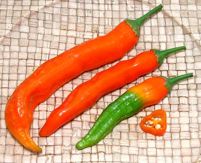
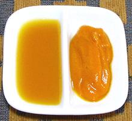
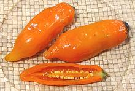
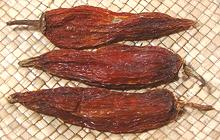
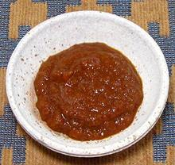
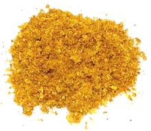
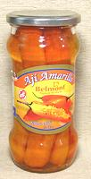

Aji Amarillo

[Peruvian yellow chili; C. baccatum var. pendulum]
This chili is most commonly associated with Peru but is also used
in Bolivia. The baccatum species originated in Peru and/or
Bolivia and still dominates the Andes region today. The name means
"Chili Yellow". It ripens to a bright orange. Some sources say they turn
yellow ("amarillo") when cooked, but they actually stay pretty orange.
This is a moderately hot variety (H4)
and grows to 3
to 6 inches long. In Peru they are used mostly fresh, but in Bolivia
they are dried and ground. A number of products are made from this
chili, see below.
The photo specimens were from my own plants, grown from seeds of a
dried aji amarillo imported from South America. The largest of the photo
specimens was 6 inches long and 7/8 inch diameter. Hotness seems rather
uneven, but is toward the mild side. I have purchased frozen Aji
Amarillos that were from a shorter fatter cultivar, than the ones I
used seeds from.
The seeds I planted sprouted well, but the plants didn't do all that
well their first year here in Southern California. They produced only
a few chilis which ripened very slowly and unevenly. The second year
they produced a pretty good yield. Their third year they produced almost
nothing, but by then I had learned that many chili plants need to be
cut back drastically after harvest. I cut these way back, and now, in
their fourth year, they are flowering well and starting to set fruit.
More on South American Chili Peppers.

Aji Amarillo Paste:
This product (to the right in
photo) is widely available here in Los Angeles, in 8 ounce jars. Nearly
every specialty market serving a significant Latino community (and our
Latino communities around here are significant - even the
Republicans are starting to notice) carries this product. It is suitable
for use as a substitute for fresh chilis in most recipes. Ingred:
Yellow chili, Salt, Citric Acid (and potassium sorbate (E202) in some
brands). It should be refrigerated after opening.
Aji Amarillo Sauce:
This bottled sauce (left in
photo) is basically the same as the paste, but cut with vinegar. Oddly,
I haven't found it here in Los Angeles yet, but I've ordered it from
Amigo Foods in Florida. It has a very good fruity flavor, like an
habanera sauce without all that hotness. It's so mild I can drink it,
but if you're from the Frozen North, maybe you wouldn't want to. Ingred:
yellow chili, vinegar, salt, xanthan gum (thickener).

Aji Amarillo, Frozen:
The photo specimens, bought
frozen from a latino market in Los Angeles, were 4-1/2 inches long by
1.4 inches diameter, a shorter, plumper cultivar than the dried ones
shown above. They were a suitable substitute for fresh ones in any
cooked recipe.

Aji Mirisol:
These are dried Aji Amarillo. The
photo specimens, purchased from Catalina's Market in Los Angeles, were
typically 4.3 inches long by 1.15 inches across. Seeds from one of
these were planted to produce the photo specimens at the top of the
page.

Aji Mirisol Paste:
This paste is much less common
than the Aji Amarillo Paste, but is available on-line. It is called for
by some Peruvian recipes. It is made from dried Mirasol chilis. Naturally,
it is of medium heat, just a little less than the Aji Amarillo paste.
Ing: Mirasol hot pepper, water, salt, citric acid, potassium sorbate,
sodium benzoate.

Aji Amarillo Powder:
In Peru, Aji Amarillo are
usually used fresh, but the dried chili powder is much used in Bolivia.
Many recipes for Peruvian dishes do call for the powder, presuming you
can't get the fresh chilis or paste. I haven't found this product here
in Los Angeles, despite the huge spice and chili displays in the stores.
The dried Aji Amarillo pods are, however, easily available, so I just
grind a few of those in my spice grinder.

Aji Amarillo, Canned:
Available in both cans and
jars, this product is pretty much the same as the paste, but not ground
up. These can be used as a substitute for fresh chilis in any recipe
where they will be cooked, but you need more texture than with paste -
or they can be used in salads. These are available in some stores here
in Los Angeles, or can be ordered on the Internet (compare prices).
Ingred: yellow chili, water, salt, citric acid. Refrigerate after
opening.
cp_ajiyz 130421 - www.clovegarden.com
©Andrew Grygus - agryg@clovegarden.com - Photos
on this page not otherwise credited © cg1
- Linking to and non-commercial use of this page permitted